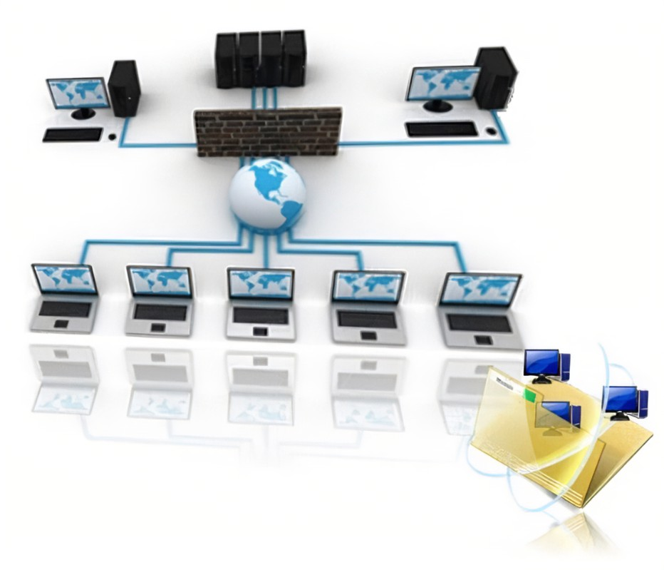

Una red dinámica es una red cuya topología puede variar durante el curso de la ejecución de un programa paralelo o entre dos ejecuciones de programas. La red está constituida por elementos materiales específicos, llamados commutadores o switches.
Las redes dinámicas se utilizan sobre todo en los multiprocesadores. En este caso, la red une los procesadores a los bancos de memoria central. Cualquier acceso de un procesador a la memoria (bien sea para acceder a los datos o a las instrucciones) debe pasar a través de la red, por lo se dice que la red tiene un acoplamiento fuerte. La red debe poseer un rendimiento extremadamente bueno para no demorar demasiado a los procesadores que acceden a memoria.
